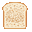
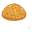
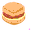

Breakfast Addon Wiki
Breakfast Addon - Official Wiki & Guide
Welcome to the Breakfast Addon official guide! This wiki explains all the mechanics, workstations, recipes, crops, and advancements added by this addon.
1. Workstations
A. The Butcher Block
The Butcher Block is used to prepare raw ingredients by slicing or processing them with a knife.
How to Use:
- Place the item: Right-click/interact on the top of the Butcher Block with a raw item in your hand.
- Process the item: Equip any Knife (Flint, Copper, Iron, or Diamond) in your main hand and right-click/interact on the block.
- Retrieve the item: Right-click/interact with an empty hand to retrieve a placed item without processing it.
- Place raw items: Right-click/interact on any of the 4 slots of the griddle with a cookable item to place it.
- Retrieve items: Right-click/interact with an empty hand to retrieve a cooking or cooked item from a slot.
- Crackle & Eject: Placing cookable items will start a crackling animation. Once cooked, the item is ejected from the griddle.
- Plain Omelet: 1 Egg + 1 Generic Meat + 1 Generic Veggie
- Bacon Omelet: 1 Egg + 1 Bacon (Raw/Cooked) + 1 Generic Veggie (e.g. Onion Slices)
- Ham Omelet: 1 Egg + 1 Ham + 1 Generic Veggie (e.g. Tomato Slice)
- Mushroom Omelet: 1 Egg + 1 Brown Mushroom Slices + 1 Red Mushroom Slices
- Nether Fungi Omelet: 1 Egg + 1 Crimson Fungus Slices + 1 Warped Fungus Slices
- Miner's Skillet: 1 Skillet + 1 Egg + 1 Bacon (Raw/Cooked) + 1 Potato/Hash Browns
- Interact with Herb Seeds (Rosemary, Thyme, Sage, Oregano) to plant them.
- The herb will grow through stages 0 to 3.
- Harvesting:
- Base Drop Rate: 50% chance to drop the custom ingredient.
- Looting Scaling: Each level of the Looting enchantment grants an additional 50% chance for
+1item. - Note on Lard: Pigs do not drop Lard directly. Instead, they drop
breakfast:pork_belly, which can be processed with a Knife on the Butcher Block to yield Bacon and a 50% chance forbreakfast:lardas a byproduct. - Rise and Shine: Craft and place a Griddle.
- Most Important Meal: Obtain Berry Pancakes.
- Short Order Cook: Cook every single basic ingredient on the Griddle (Bacon, Eggs, Toast, Hash Browns, Sausage).
- Miner's Breakfast: Eat a Miner's Skillet (clears Mining Fatigue and grants Haste I for 90 seconds).
- Nether Brunch: Consume a Nether Fungi Omelet while standing inside the Nether dimension.
- Note: Fried Eggs are eaten twice as fast as normal food.
- Note: Cheese Wheels are eaten slower due to their size.
Processing Recipes:
| Input Block/Item | Tool Required | Output Item | Base Count | Bonus/Byproducts |
|---|---|---|---|---|
 minecraft:porkchop | Knife | breakfast:ham | 1 | |
breakfast:ham | Knife | breakfast:ground_pork | 1 | |
breakfast:pork_belly | Knife | breakfast:bacon | 2 | 50% chance for breakfast:lard |
 minecraft:potato | Knife | breakfast:raw_hash_browns | 1 | |
 minecraft:bread | Knife |  breakfast:bread_slice | 3 | |
breakfast:onion | Knife | breakfast:onion_slices | 3 | |
breakfast:tomato | Knife | breakfast:tomato_slice | 3 | |
breakfast:pepper | Knife | breakfast:pepper_slices | 3 | |
breakfast:cheese_wheel | Knife | breakfast:cheese_slice | 4 | |
breakfast:beef_flank | Knife |  breakfast:steak_strips | 2 | |
breakfast:suet | Knife | breakfast:tallow | 2 | |
breakfast:mutton_ribs | Knife |  breakfast:mutton_strips | 2 | |
breakfast:rabbit_backstrap | Knife | breakfast:rabbit_sausage_raw | 2 | |
 minecraft:carrot | Knife | breakfast:carrot_slices | 3 | |
 minecraft:beetroot | Knife | breakfast:beetroot_slices | 3 | |
 minecraft:brown_mushroom | Knife | breakfast:brown_mushroom_slices | 3 | |
 minecraft:red_mushroom | Knife | breakfast:red_mushroom_slices | 3 | |
 minecraft:crimson_fungus | Knife | breakfast:crimson_fungus_slices | 3 | |
 minecraft:warped_fungus | Knife | breakfast:warped_fungus_slices | 3 | |
| Herbs (Rosemary, Thyme, etc.) | Knife | Chopped variant | 2 |
Note: Diamond Knives guarantee +1 bonus slice and 100% byproduct drops, while Flint Knives have a 20% failure rate and drop no byproducts.
B. The Griddle
The Griddle is a hot cooking surface used to fry meats, bake bread, evaporate liquids, and fuse complex dishes like Omelets.
How to Use:
Burn Hazard: Walking or standing on an active Griddle inflicts 1 fire damage per tick to players and mobs.
Cooking Recipes (Single Items):
| Raw Input | Cooked Output | Cook Time (sec) |
|---|---|---|
breakfast:bacon | breakfast:cooked_bacon | 7.5 |
 minecraft:egg | breakfast:fried_egg | 6.0 |
breakfast:bread_slice | breakfast:toast | 6.0 |
breakfast:raw_hash_browns |  breakfast:hash_browns | 6.0 |
breakfast:raw_sausage | breakfast:sausage | 7.5 |
breakfast:onion_slices |  breakfast:grilled_onion | 6.0 |
breakfast:tomato_slice |  breakfast:grilled_tomato | 6.0 |
breakfast:pepper_slices |  breakfast:grilled_pepper | 6.0 |
breakfast:steak_strips |  breakfast:cooked_steak_strips | 7.5 |
breakfast:mutton_strips |  breakfast:cooked_mutton_strips | 7.5 |
breakfast:rabbit_sausage_raw |  breakfast:rabbit_sausage | 7.5 |
breakfast:carrot_slices | breakfast:grilled_carrot | 6.0 |
breakfast:beetroot_slices | breakfast:grilled_beetroot | 6.0 |
breakfast:brown_mushroom_slices | breakfast:grilled_brown_mushroom | 6.0 |
breakfast:red_mushroom_slices | breakfast:grilled_red_mushroom | 6.0 |
breakfast:crimson_fungus_slices | breakfast:grilled_crimson_fungus | 6.0 |
breakfast:warped_fungus_slices | breakfast:grilled_warped_fungus | 6.0 |
 minecraft:water_bucket | breakfast:salt x3 (returns empty bucket) | 7.5 |
 minecraft:milk_bucket | breakfast:cheese_curds x1 (returns empty bucket) | 7.5 |
Omelet Fusion Recipes:
Griddle fusions occur when the correct ingredients are placed together on the Griddle top:
2. Agriculture & Farming
A. Crops
| Crop Type | Soil | Growth Stages | Harvest Behavior |
|---|---|---|---|
| Onion | Farmland | 0 - 3 | Drops Onion. Resets to Stage 0 (replants itself). |
| Tomato | Farmland / Trellis | 0 - 3 | Interacting harvests tomatoes and resets the crop to stage 2. Can grow vertically up to 3 blocks high when placed next to Tomato Trellises. |
| Pepper | Farmland | 0 - 3 | Interacting harvests bell peppers and resets the crop to stage 2. |
| Spinach | Farmland | 0 - 3 | Grows up to 2 blocks tall. Harvest the top block with Shears or a Knife to gather leaves while leaving the base block to regrow. |
B. The Herb Pot
The Herb Pot is a decorative block used to cultivate garden herbs.
Cultivation:
- Empty Hand: Interacting retrieves the entire plant/seeds, resetting the pot.
- Knife / Shears: Interacting harvests 2 Chopped Herbs and damages the tool, resetting the growth progress back to stage 1 for continuous regrowth.
C. Livestock & Knife Drops
To gather custom cuts of meat, players must harvest them from livestock using a Knife (Flint, Copper, Iron, or Diamond) to land the killing blow.
Key Mechanics:
Custom Drops by Mob:
| Mob | Custom Drop | Knife Required | Base Chance |
|---|---|---|---|
| Cow | breakfast:beef_flank & breakfast:suet | Knife | 50% each |
| Pig | breakfast:pork_belly | Knife | 50% |
| Sheep | breakfast:mutton_ribs | Knife | 50% |
| Chicken | breakfast:chicken_breast | Knife | 50% |
| Rabbit | breakfast:rabbit_backstrap | Knife | 50% |
3. Advancements
The addon registers 5 custom advancements that broadcast to all players in chat upon completion:
4. Food Reference Guide
Foods are organized into three tiers based on their nutritional value, eating speed, and special effects.
A. Snacks (Quick Bites)
Snacks have low nutritional values but are perfect for quick consumption in the middle of travel or combat.
| Food Item | Identifier | Nutrition | Saturation | Eat Speed | Special Buffs / Notes |
|---|---|---|---|---|---|
| Fried Egg | breakfast:fried_egg | 3 | 0.4 | Fast (0.8s) | A quick energy boost. |
| Cheese Slice | breakfast:cheese_slice | 1 | 0.2 | Normal (1.6s) | Processed from cheese wheels. |
| Cheese Curds | breakfast:cheese_curds | 2 | 0.3 | Normal (1.6s) | Frying milk returns curds. |
| Bread Slice | breakfast:bread_slice | 2 | 0.2 | Normal (1.6s) | Prepared on Butcher Block. |
| Spinach | breakfast:spinach | 1 | 0.1 | Normal (1.6s) | Freshly harvested. |
| Onion | breakfast:onion | 1 | 0.1 | Normal (1.6s) | Can compost. |
B. Meals
Standard meals that provide moderate nutrition and saturation. They have standard eating speeds.
| Food Item | Identifier | Nutrition | Saturation | Eat Speed | Special Buffs / Notes |
|---|---|---|---|---|---|
| Sausage | breakfast:sausage | 6 | 0.8 | Normal (1.6s) | Hearty and savory. |
| Rabbit Sausage | breakfast:rabbit_sausage | 5 | 0.6 | Normal (1.6s) | Made from rabbit backstrap. |
| Bacon | breakfast:bacon | 2 | 0.2 | Normal (1.6s) | Raw bacon cut. |
| Cooked Bacon | breakfast:cooked_bacon | 4 | 0.4 | Normal (1.6s) | Crispy. |
| Ham | breakfast:ham | 5 | 0.6 | Normal (1.6s) | Raw ham steak. |
| Biscuit | breakfast:biscuit | 5 | 0.7 | Normal (1.6s) | Freshly baked biscuit. |
| Hash Browns | breakfast:hash_browns | 4 | 0.6 | Normal (1.6s) | Speed I for 30 seconds. |
| Toast | breakfast:toast | 4 | 0.5 | Normal (1.6s) | Crispy griddled bread. |
| Toast with Jam | breakfast:toast_jam | 5 | 0.6 | Normal (1.6s) | Sweet breakfast treat. |
| Cooked Steak Strips | breakfast:cooked_steak_strips | 4 | 0.6 | Normal (1.6s) | Fired flank steak. |
| Cooked Mutton Strips | breakfast:cooked_mutton_strips | 4 | 0.6 | Normal (1.6s) | Fired mutton ribs. |
| Glowberry Toast | breakfast:glowberry_toast | 5 | 0.6 | Normal (1.6s) | Night Vision for 30 seconds. |
| Grilled Tomato | breakfast:grilled_tomato | 3 | 0.4 | Normal (1.6s) | Griddled tomato slice. |
| Grilled Onion | breakfast:grilled_onion | 2 | 0.3 | Normal (1.6s) | Griddled onion slice. |
| Grilled Pepper | breakfast:grilled_pepper | 3 | 0.4 | Normal (1.6s) | Griddled pepper slice. |
| Grilled Beetroot | breakfast:grilled_beetroot | 3 | 0.4 | Normal (1.6s) | Griddled beetroot slice. |
| Grilled Carrot | breakfast:grilled_carrot | 3 | 0.4 | Normal (1.6s) | Griddled carrot slice. |
| Grilled Brown Mushroom | breakfast:grilled_brown_mushroom | 3 | 0.4 | Normal (1.6s) | Griddled brown mushroom. |
| Grilled Red Mushroom | breakfast:grilled_red_mushroom | 3 | 0.4 | Normal (1.6s) | Griddled red mushroom. |
| Grilled Crimson Fungus | breakfast:grilled_crimson_fungus | 3 | 0.4 | Normal (1.6s) | Griddled crimson fungus. |
| Grilled Warped Fungus | breakfast:grilled_warped_fungus | 3 | 0.4 | Normal (1.6s) | Griddled warped fungus. |
| Tomato | breakfast:tomato | 2 | 0.2 | Normal (1.6s) | Raw tomato. |
| Pepper | breakfast:pepper | 2 | 0.2 | Normal (1.6s) | Raw bell pepper. |
| Raw Sausage | breakfast:raw_sausage | 2 | 0.3 | Normal (1.6s) | 10% chance to inflict Hunger for 15 seconds. |
C. Feast & Advanced Meals (High-Tier)
Advanced breakfast meals and omelet fusions. They provide exceptional nutrition/saturation and carry powerful buffs.
| Food Item | Identifier | Nutrition | Saturation | Eat Speed | Special Buffs / Notes |
|---|---|---|---|---|---|
| Miner's Skillet | breakfast:miners_skillet | 12 | 1.2 | Normal (1.6s) | Clears Mining Fatigue & grants Haste I (90s). Returns empty skillet. Fused from 1 Skillet + 1 Egg + 1 Bacon + 1 Potato/Hash Browns. |
| Biscuits & Gravy | breakfast:biscuits_and_gravy | 10 | 1.2 | Normal (1.6s) | Regeneration I for 30 seconds. |
| Biscuit Sandwich |  breakfast:biscuit_sandwich | 9 | 1.0 | Normal (1.6s) | Haste I for 45 seconds. |
| Toaster Sandwich | breakfast:toaster_sandwich | 9 | 1.0 | Normal (1.6s) | Haste I for 45 seconds. |
| Berry Pancakes | breakfast:berry_pancakes | 8 | 0.8 | Normal (1.6s) | Haste I for 60 seconds. |
| Plain Omelet | breakfast:omelet | 5 | 0.8 | Normal (1.6s) | Regeneration I (180s). Fused from 1 Egg + 1 Generic Meat + 1 Generic Veggie. |
| Bacon Omelet | breakfast:bacon_omelet | 7 | 0.9 | Normal (1.6s) | Regeneration I (180s). Fused from 1 Egg + 1 Bacon + 1 Generic Veggie. |
| Ham Omelet | breakfast:ham_omelet | 7 | 0.9 | Normal (1.6s) | Regeneration I (180s). Fused from 1 Egg + 1 Ham + 1 Generic Veggie. |
| Mushroom Omelet | breakfast:mushroom_omelet | 6 | 0.8 | Normal (1.6s) | Regeneration I for 180 seconds. |
| Nether Fungi Omelet | breakfast:nether_fungi_omelet | 6 | 0.6 | Normal (1.6s) | Fire Resistance (15s) and Nausea (5s). Awards achievement in Nether. |
| Cheese Wheel | breakfast:cheese_wheel | 6 | 0.6 | Slow (2.4s) | Yields cheese slices on Butcher Block. |